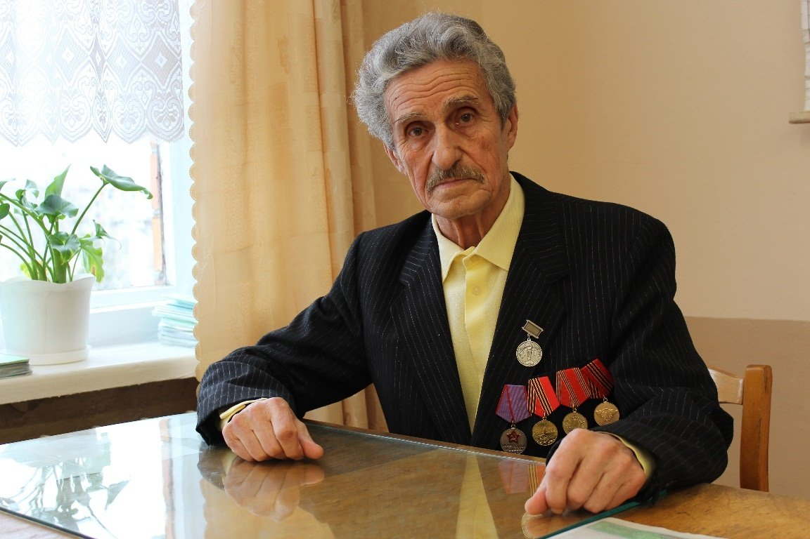
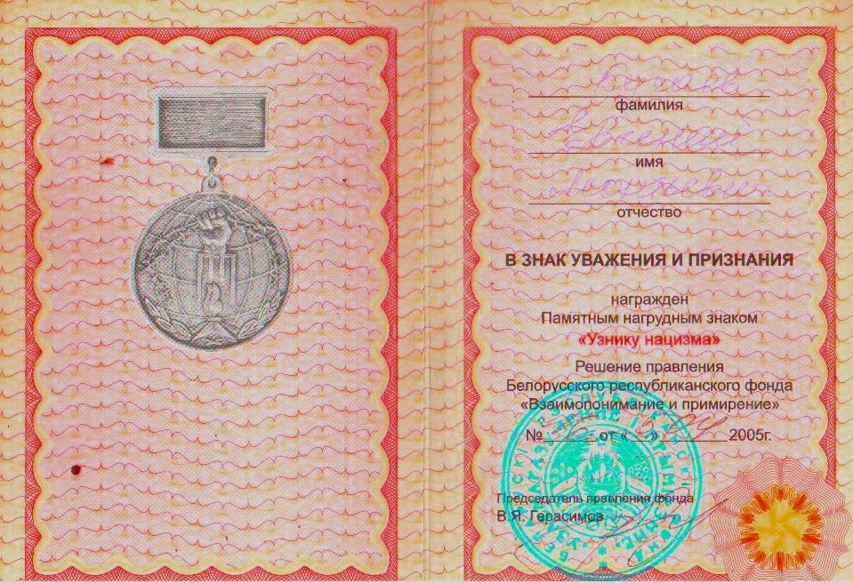

Бугаёв Евгений Леонтьевич
🏡 1. Семья и довоенное детство
Мама, Кучаева Ольга Петровна, вела домашнее хозяйство; отец, Леонтий Николаевич, трудился на лесозаводе. В семье росли братья Коля и Саша. Жили на окраине Микашевичей на Рудне.
⚡ 2. Начало войны и оккупация родного края
В ноябре 1942 г. подпольщик Иван Конопацкий взорвал кинотеатр с фашистами. Каратели сожгли дом Бугаёвых. Семья перебралась на хутор возле деревни Запросье к тете Варваре. Там держали тайную связь с партизанами, снабжали их продуктами.
⛓️ 3. Облава, арест и отправка в эшелонах
В конце июля 1943 г. партизаны предупредили об опасности, но семью выдал предатель. На рассвете всех арестовали, увезли в тюрьму Пинска, а после Курской битвы отправили в концлагерь Майданек (Люблин, Польша). В памяти 6-летнего мальчика навсегда остались длинные деревянные бараки, нары и удушливый запах крематория. Через две недели узников выстроили на продажу в рабство. Немецкий управляющий ощупывал рослого отца, после чего семью Бугаёвых и Ковальских увезли в поместье Альт-Бисдорф под Берлином.
🌾 4. Рабский труд, испытания и лагеря Германии
Жили в комнатке 3х4 метра с двухъярусными нарами и угольной печуркой. Кормили эрзац-хлебом наполовину с опилками и баландой. Французские военнопленные тайком подкармливали детей сушеной сахарной свеклой — «вкуснее шоколадных конфет». Внуки помещика называли советских детей «russische Schweine» и избивали 6-летнего Женю в живот. Однажды дедушка-помещик избил мальчика до крови за сорванный виноград. В 1944–1945 гг. Берлин бомбили каждую ночь; младший братик Максим заболел воспалением легких и умер в бомбоубежище винного завода. Отец с товарищем прятали на территории завода сбитого советского летчика.
🕊️ 5. Освобождение союзными и советскими войсками
16 апреля 1945 г. началась битва за Берлин, линия фронта прошла прямо по пригородному поместью. 23 апреля 1945 г. семью освободили бойцы Красной Армии. Отца за знание немецкого языка зачислили в армейский особый отдел для выявления скрывавшихся нацистов. В июле 1945 г. семья вернулась в Брест.
🌱 6. Возвращение на пепелище и мирный труд
Вернулись на пепелище, жили у родственников Скрипалей, в 1948 г. отстроили дом. Евгений Леонтьевич получил образование, стал главным инженером автобазы №10 г. Лунинца. В 1959 г. женился на медсестре Марии Михайловне, воспитали дочерей Наталью (архитектор) и Лилию (врач). В 1970 г. посетил мемориал Майданек, где пережил глубокое потрясение от оживших воспоминаний.
📷 Фотографии и архивные документы (2)
Фото 3. Бугаев Е.Л., 10.02.2013 год, средняя школа №2

Фото 4. Удостоверение «Узника нацизма», выданное Бугаеву Е.Л., 2005 г.